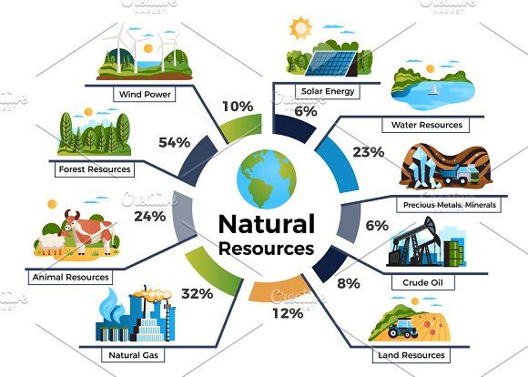
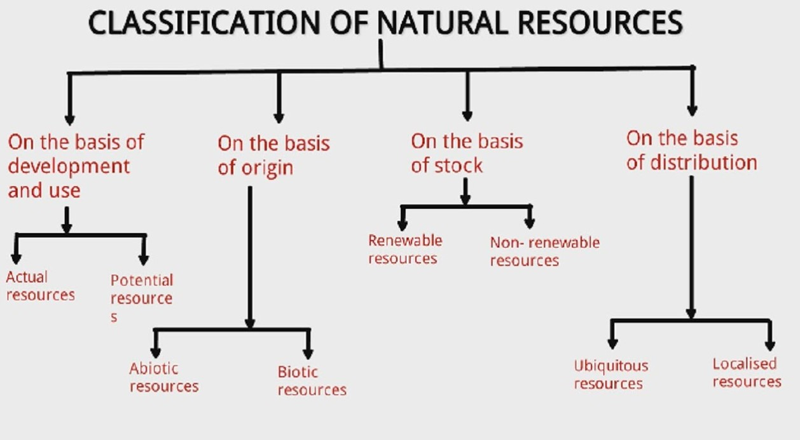
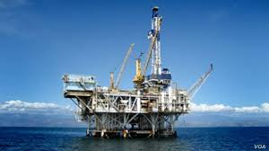
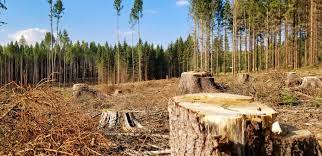
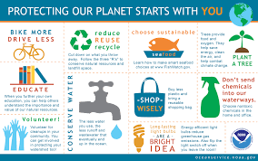
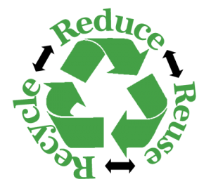
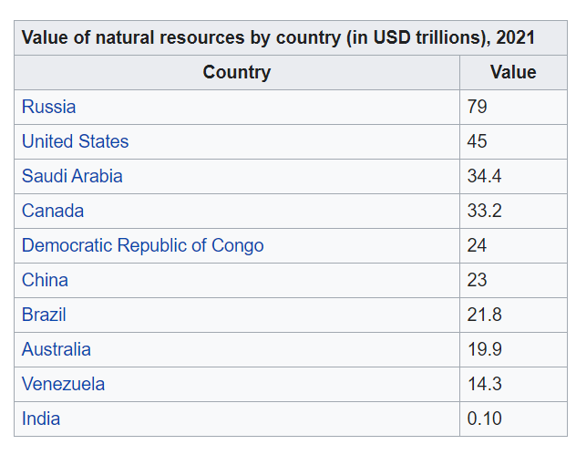

What are Natural Resources ?
 Natural resources are resources that exist without any actions of humankind. This includes the sources of valued characteristics such as commercial and industrial use, aesthetic value, scientific interest and cultural value. On Earth, it includes sunlight, atmosphere, water, land, all minerals along with all vegetation, and animal life. Natural resources can be part of our natural heritage or protected in nature reserves.
Natural resources are materials and components (something that can be used) that can be found within the environment . Every man-made product is composed of natural resources (at its fundamental level). A natural resource may exist as a separate entity such as fresh water, air, as well as any living organism such as a fish, or it may exist in an alternate form that must be processed to obtain the resource such as metal ores, rare-earth elements, petroleum, and most forms of energy.
Classification of Natural Resorces
There are various methods of categorizing natural resources. These include the source of origin, stage of development, and by their renewability.
On the basis of origin, natural resources may be divided into two types:
- Biotic: Biotic resources are obtained from the biosphere (living and organic material), such as forests and animals, and the materials that can be obtained from them. Fossil fuels such as coal and petroleum are also included in this category because they are formed from decayed organic matter.
- Abiotic: Abiotic resources are those that come from non-living, non-organic material. Examples of abiotic resources include land, fresh water, air, rare-earth elements, and heavy metals including ores, such as gold, iron, copper, silver, etc.
Considering their stage of development, natural resources may be referred to in the following ways:
- Potential resources: Potential resources are those that may be used in the future for example, petroleum in sedimentary rocks that, until drilled out and put to use remains a potential resource.
- Actual resources: Those resources that have been surveyed, quantified and qualified, and are currently used in development, such as wood processing, and are typically dependent on technology.
- Reserve resources: The part of an actual resource that can be developed profitably in the future.
- Stock resources: Those that have been surveyed, but cannot be used due to lack of technology. for example, hydrogen.
On the basis of recovery rate, natural resources can be categorized as follows:
- Renewable resources: Renewable resources can be replenished naturally. Some of these resources, like sunlight, air, wind, water, etc. are continuously available and their quantities are not noticeably affected by human consumption.
- Non-renewable resources: Non-renewable resources either form slowly or do not naturally form in the environment. Minerals, Fossil Fuels are the most common resource included in this category. Once they are completely used they take millions of years to replenish.
Extraction of Natural Resorces
 Resource extraction involves any activity that withdraws resources from nature. This can range in scale from the traditional use of preindustrial societies to global industry. Extractive industries are, along with agriculture, the basis of the primary sector of the economy. Extraction produces raw material, which is then processed to add value. Examples of extractive industries are hunting, trapping, mining, oil and gas drilling, and forestry.
Natural resources can add substantial amounts to a country's wealth. However, a sudden inflow of money caused by a resource boom can create social problems including inflation harming other industries ("Dutch disease") and corruption, leading to inequality and underdevelopment, this is known as the "resource curse".
Extractive industries represent a large growing activity in many less-developed countries but the wealth generated does not always lead to sustainable and inclusive growth. People often accuse extractive industry businesses as acting only to maximize short-term value, implying that less-developed countries are vulnerable to powerful corporations. Alternatively, host governments are often assumed to be only maximizing immediate revenue. Researchers argue there are areas of common interest where development goals and business cross.
These present opportunities for international governmental agencies to engage with the private sector and host governments through revenue management and expenditure accountability, infrastructure development, employment creation, skills and enterprise development, and impacts on children, especially girls and women.
A strong civil society can play an important role in ensuring the effective management of natural resources.
Depletion of Natural Resorces
 In recent years, the depletion of natural resources has become a major focus of governments and organizations such as the United Nations (UN). The depletion of natural resources is considered a sustainable development issue.
The term sustainable development has many interpretations, most notably the Brundtland Commission's 'to ensure that it meets the needs of the present without compromising the ability of future generations to meet their own needs' However, in broad terms it is balancing the needs of the planet's people and species now and in the future. In regards to natural resources, depletion is of concern for sustainable development as it has the ability to degrade current environment and the potential to impact the needs of future generations.
At present, there is a particular concern for rainforest regions that hold most of the Earth's biodiversity. According to Nelson, deforestation and degradation affect 8.5% of the world's forests with 30% of the Earth's surface already cropped. If we consider that 80% of people rely on medicines obtained from plants and 3/4 of the world's prescription medicines have ingredients taken from plants, loss of the world's rainforests could result in a loss of finding more potential life-saving medicines.
The depletion of natural resources is caused by 'direct drivers of change' such as Mining, petroleum extraction, fishing, and forestry as well as 'indirect drivers of change' such as demography (e.g. population growth), economy, society, politics, and technology.
The current practice of Agriculture is another factor causing depletion of natural resources. For example, the depletion of nutrients in the soil due to excessive use of nitrogen and desertification. The depletion of natural resources is a continuing concern for society.
Protection of Natural Resorces
 In 1982, the United Nations developed the World Charter for Nature, which recognized the need to protect nature from further depletion due to human activity. It states that measures must be taken at all societal levels, from international to individual, to protect nature. It outlines the need for sustainable use of natural resources and suggests that the protection of resources should be incorporated into national and international systems of law. br To look at the importance of protecting natural resources further, the World Ethic of Sustainability, developed by the IUCN, WWF and the UNEP in 1990, set out eight values for sustainability, including the need to protect natural resources from depletion. Since the development of these documents, many measures have been taken to protect natural resources including establishment of the scientific field and practice of conservation biology and habitat conservation, respectively.
Conservation biology is the scientific study of the nature and status of Earth's biodiversity with the aim of protecting species, their habitats, and ecosystems from excessive rates of extinction. It is an interdisciplinary subject drawing on science, economics and the practice of natural resource management. The term conservation biology was introduced as the title of a conference held at the University of California, San Diego, in La Jolla, California, in 1978, organized by biologists Bruce A. Wilcox and Michael E. Soule.
Management of Natural Resorces
 Natural resource management is a discipline in the management of natural resources such as land, water, soil, plants, and animals with a particular focus on how management affects quality of life for present and future generations. Hence, Sustainable Development is followed according to judicial use of resources to supply both the present generation and future generations. The disciplines of fisheries, forestry, and wildlife are examples of large subdisciplines of natural resource management.
Management of natural resources involves identifying who has the right to use the resources, and who does not, for defining the boundaries of the resource. The resources may be managed by the users according to the rules governing when and how the resource is used depending on local condition or the resources may be managed by a governmental organization or other central authority.
A successful management of natural resources depends on freedom of speech, a dynamic and wide-ranging public debate through multiple independent media channels and an active civil society engaged in natural resource issues because of the nature of the shared resources the individuals who are affected by the rules can participate in setting or changing them. The users have rights to devise their own management institutions and plans under the recognition by the government. The right to resources includes land, water, fisheries and pastoral rights. The users or parties accountable to the users have to actively monitor and ensure the utilisation of the resource compliance with the rules and to impose penalty on those peoples who violate the rules. These conflicts are resolved in a quick and low cost manner by the local institution according to the seriousness and context of the offence. The global science-based platform to discuss natural resources management is the World Resources Forum, based in Switzerland.
Natural Resources by Country

 by Ananay Gupta © All Rights Reserved 2021
by Ananay Gupta © All Rights Reserved 2021